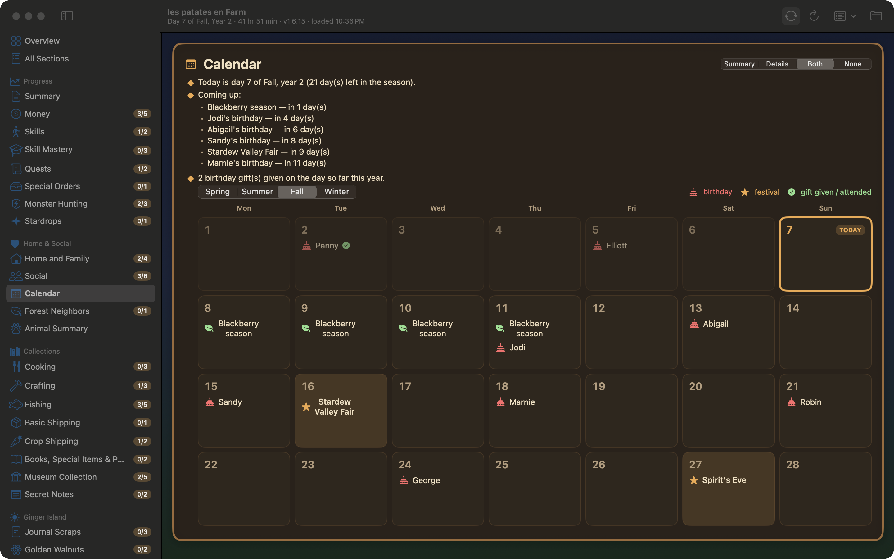
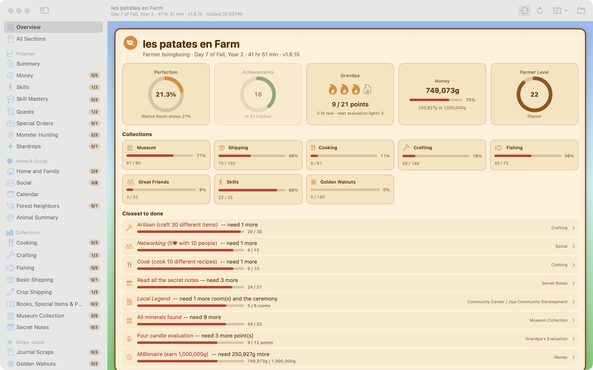
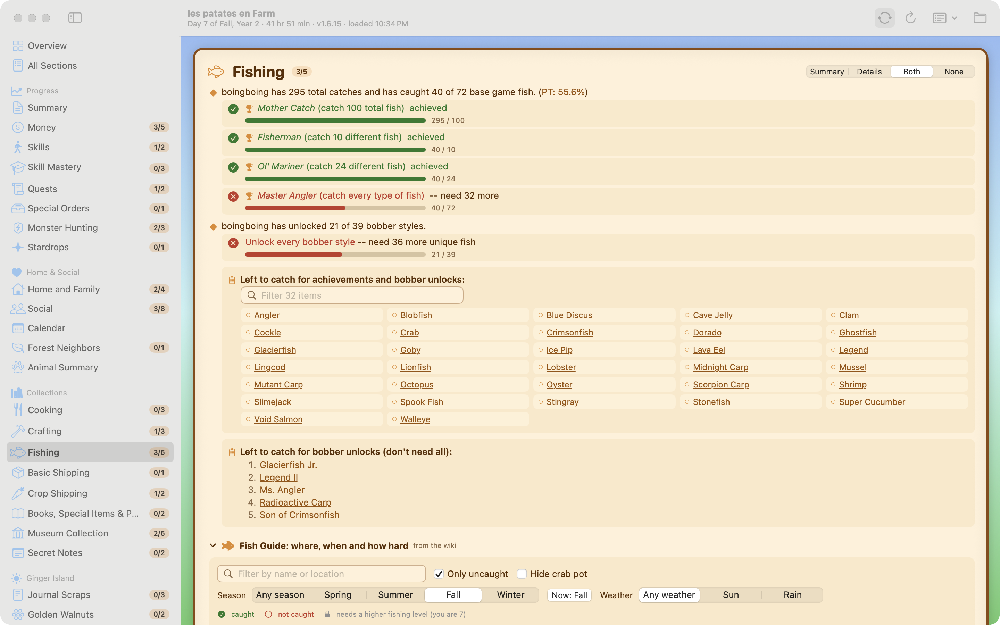

See exactly what's left to do on your farm. A native Mac app that reads your save file and lays out every achievement, bundle, walnut, friendship and Perfection goal — and refreshes itself every time the game saves.
macOS 14 Sonoma or later · Apple silicon & Intel · Free and open source · Works with Stardew Valley 1.6



This app exists because of Stardew Checkup, the web app MouseyPounds has maintained since 2017. It checks the same 46 achievements and completion goals, and the checkup logic here is a port of that MIT-licensed code, kept faithful section by section.
What this adds is the Mac part: a native window that reloads itself as you play, a dashboard, heart meters, and the calendar, fish and XP guides. If you'd rather not install anything, the original works great in any browser.
Every Steam achievement plus the milestones that matter: Grandpa's four candles, the Rusty Key, Stardrops, Mastery perks, Qi's special orders.
Leave it open on a second screen. The moment the game saves, the report reloads — no clicking, no re-uploading.
Not just "you've shipped 75 of 155": the 80 items you haven't, as filterable grids with wiki links. Same for recipes, fish, artifacts, notes and walnuts.
Heart meters for every villager, bouquet-locked hearts marked, heart events shown as seen / pending / missed.
Birthdays read from your own save (mods included), festivals, forage seasons, gifts you already gave this year, and what's coming up.
Where, when and in what weather each fish bites, locked by your fishing level; and what gives XP in every skill with "how many to next level" worked out for you.
Golden walnut hunt with spoiler-protected hints, island upgrades, and the full Perfection breakdown with the Walnut Room percentage.
Host and farmhands side by side, each with their own achievements, and the farm-wide totals the game actually uses.
Nothing is uploaded. The app asks once which folder your saves live in and only ever reads them.
Swift and SwiftUI, light and dark mode, universal binary. The checkup logic is a faithful port of MouseyPounds' Stardew Checkup web app (MIT), with reference data from the Stardew Valley Wiki. No Electron, no accounts, no telemetry.
Free, via Homebrew or as a notarized download.
brew install --cask patbonecrusher/tap/stardew-checkup
git clone https://github.com/patbonecrusher/stardew-checkup cd stardew-checkup && ./build.sh --open